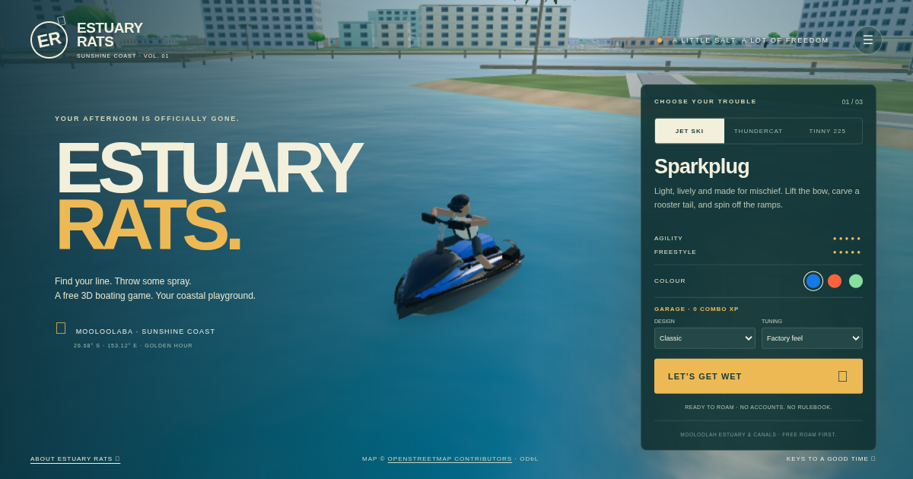

Jet ski
Carve tight turns, throw sprays and practise bow rides in a compact freestyle watercraft.
Mooloolaba · Sunshine Coast · Free roam
Estuary Rats is a free single-player 3D boating game you play in your browser. Choose your watercraft, launch beside The Wharf and explore a coastal playground inspired by Mooloolaba's canals and the Mooloolah River estuary in Queensland, Australia.
Play Estuary Rats →
Carve tight turns, throw sprays and practise bow rides in a compact freestyle watercraft.
Drive a twin-pontoon racing inflatable with a 50 hp-inspired outboard, powered slides and wake hops.
Take the 2.25 m alloy tender and its 25 hp-inspired outboard through the canals and house pontoons.
Free roam is the main mode. Cruise past waterfront homes, cross under bridges, visit the marina and head toward the river mouth for larger waves. Computer-controlled local boaters cruise the waterways, and you can spray them for fun without starting a timed battle.
Try the optional checkpoint race, trick session or stunt features when you want a challenge. You can also save your watercraft, colours and settings locally in your browser.
On phones, turn sideways and use the touch controls. Start with Auto quality; choose Low if you need a lighter rendering setting.
Open the game in a recent browser with JavaScript and WebGL enabled, choose a boat and press Play. Speeds, engine performance and handling are approximate gameplay values.
Looking for “Eastary Rats”? You're in the right place—the game's name is Estuary Rats.
Launch into Estuary Rats →